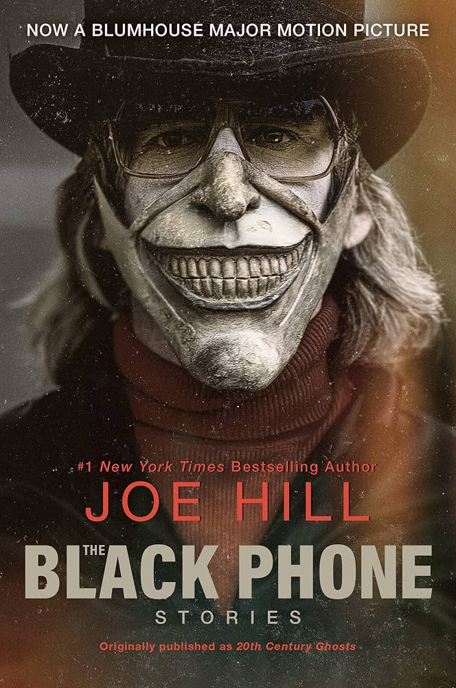
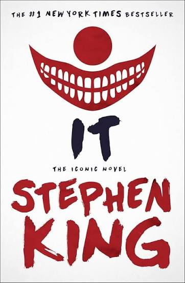
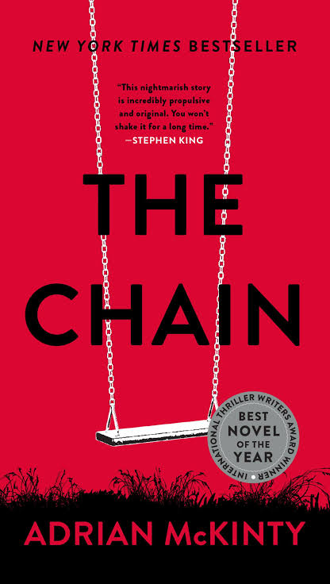
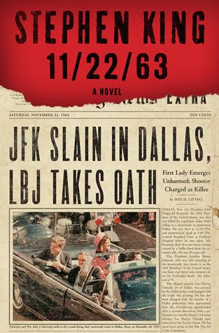
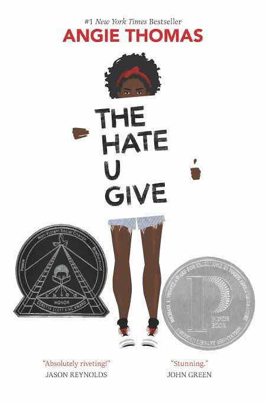

This site features a collection of books that I have read and enjoyed. Each figure includes the cover of a book along with its title and author. The books include a variety of realistic fiction, darker stories, and other books that have left an impression on me.
I enjoy books that focus on interesting characters, emotional stories, and realistic situations. Some of these books stood out to me because of their characters and the way their stories stayed with me after I finished reading them. This collection highlights some of the books that I have enjoyed most.




